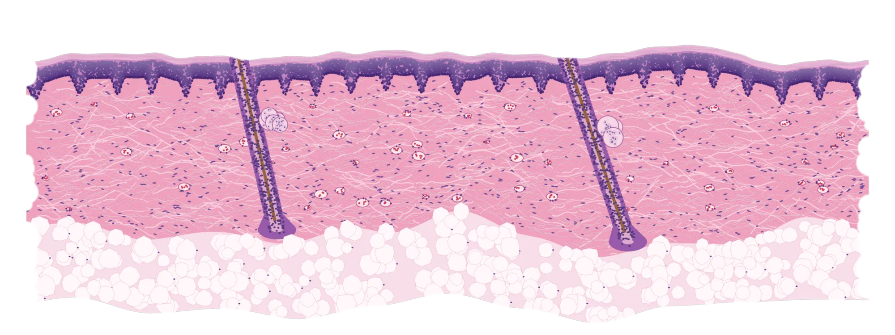
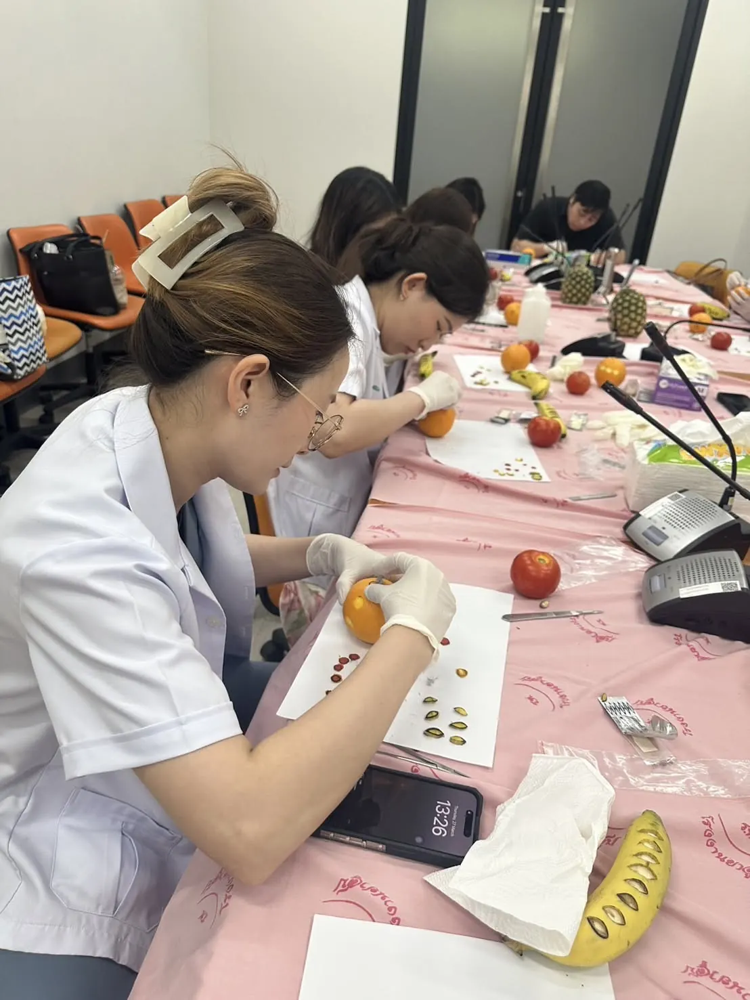
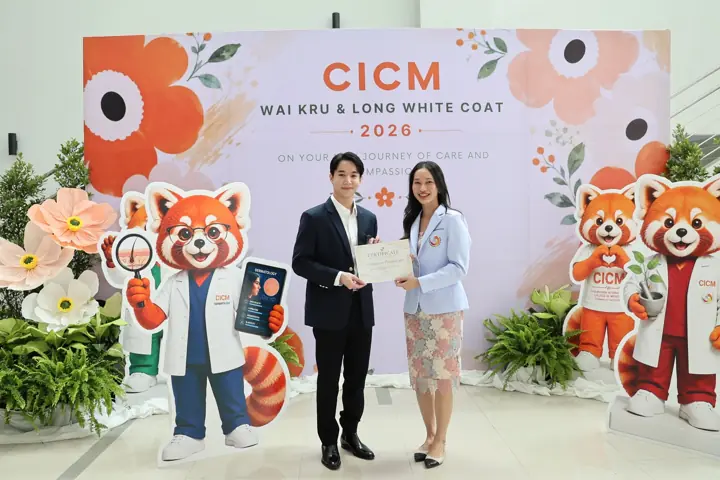

Thailand's first international graduate program in dermatology
M.Sc. and Ph.D. programs taught in English at Chulabhorn International College of Medicine, Thammasat University.

b a e f d c- bSebaceous glandClinic from the first semester
- aEpidermisThree programs, taught in English
- eHair follicle112 papers in PubMed
- fSubcutaneous fatGraduations, ceremonies and conferences
- dBlood vesselPartners in Japan, South Korea, the Netherlands and the United States
- cDermisSix lecturers trained in five countries
Plate 2
Three programs
Two master's tracks and a Ph.D., all taught in English. The master's programs take two years while the Ph.D. runs two to four years depending on how you enter.
See the courses, requirements and fees
Who it is for
Doctors who want to build specialized skills, move ahead in clinical practice, do academic research or develop new treatments in dermatology. The program also prepares graduates to set up and run a dermatology practice of their own.
What you need to apply
A Doctor of Medicine degree with a GPA of at least 2.50 for the master's, and an English score such as IELTS 6.0 or TOEFL iBT 61. Thai applicants also need a medical license with two years of experience, including at least one year of internship.
Plate 3
Hands-on from the first semester
Lectures run alongside clinical training with real patients. Students use modern equipment under the close supervision of experienced instructors, and train with partner hospitals across Thailand.

a b c dFigures 3b to 3e are clips from the program film.
Plate 4
The faculty
Six lecturers who trained in Thailand, Japan, the United States, the United Kingdom and Switzerland.
Plate 5
Training abroad
All students can join international elective studies, with past electives in Japan, the Netherlands and Switzerland. The program also works with partner universities and clinics in Japan, South Korea, the Netherlands and the United States.
Plate 6
Research that gets published
Faculty and program members have 112 papers indexed in PubMed across 53 journals, including 22 randomized controlled trials.
Research record, PubMed, 2011 to 2026
Plate 7
Life at CICM
Follow CICM Dermatology on Facebook for graduations, ceremonies, conferences and admission news.

On Facebook
Loading the Facebook feed.
Apply to CICM Dermatology
Check the requirements
Read the entry requirements and English score minimums for your program.
Prepare your documents
Application form, ID or passport, degree certificates, transcript, medical license, internship certificate, English score, CV and three recommendation letters.
Apply online
Submit your application through the CICM online form.
Written exam and interview
Shortlisted applicants sit a written exam on basic dermatology and an interview.
- Line
- @565wfxef
- Office hours
- Mon to Fri, 8:30 to 16:30